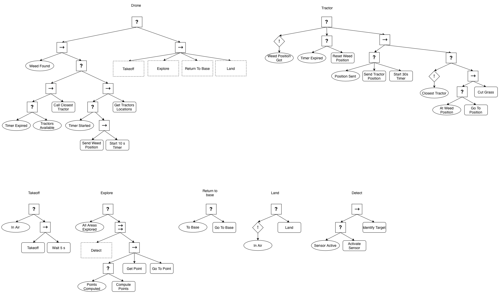
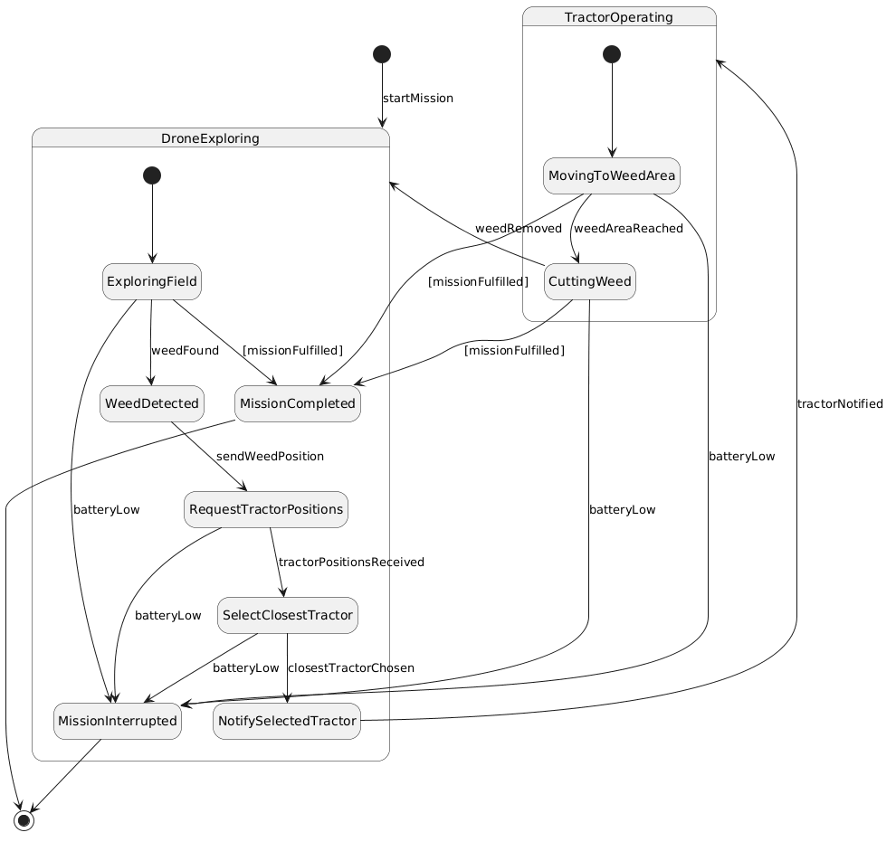
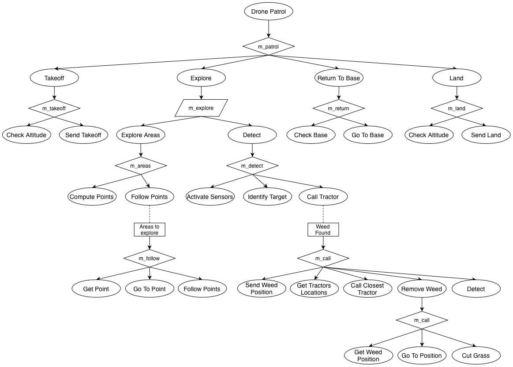
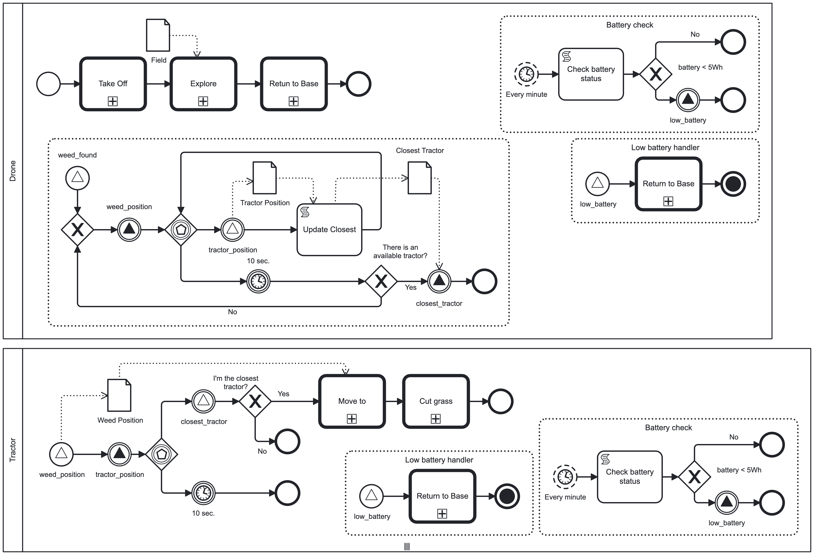

In a smart agricultural scenario a drone and two tractors that cooperate to identify and remove weed grass in farmland, to increasing productivity. At the system start-up, the drone takes off and starts exploring the field. During the flight, it can recognize weed grass areas, and when found, it sends the weed position to the tractors. Identifying a weed enacts the tractors, which send back their current position to the drone. The drone can hence elect the closest tractor and notify it. At this point, the selected tractor starts moving toward the field to reach the weed grass area and cut it. The execution of the robots may be interrupted if their batteries run out or the whole mission has been fulfilled.
Corradini, F., Pettinari, S., Re, B., Rossi, L., & Tiezzi, F. (2023). "A BPMN-driven framework for Multi-Robot System development. Robotics and Autonomous Systems", 160, 104322.

Smart Agriculture - Behavior Tree

Smart Agriculture - State Machine

Smart Agriculture - HTN

Smart Agriculture - BPMN (from the referenced paper)